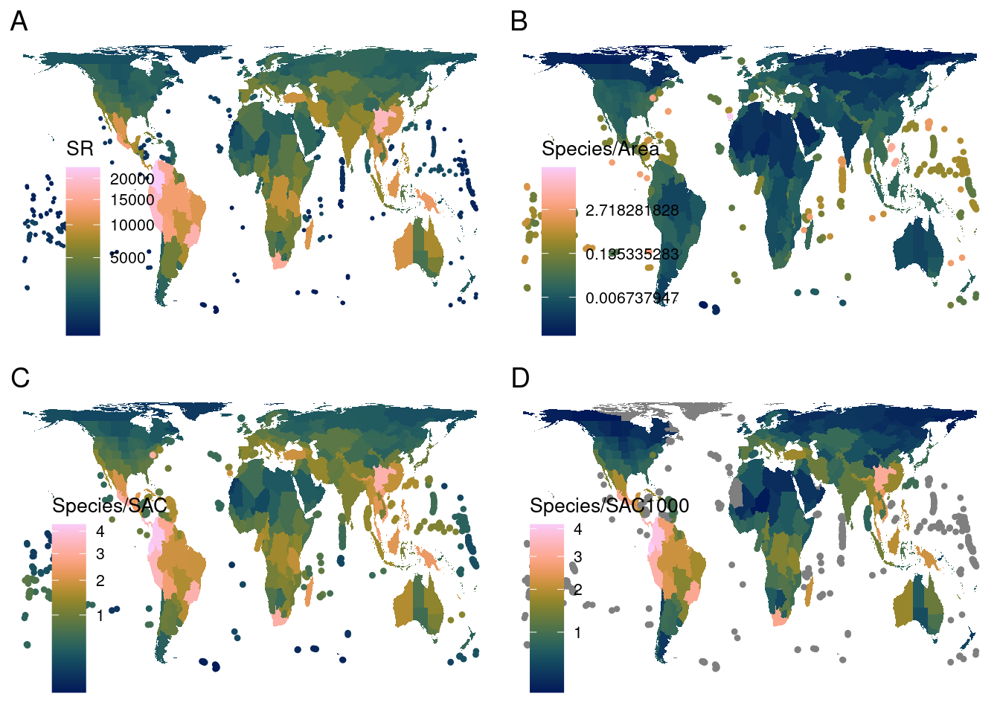
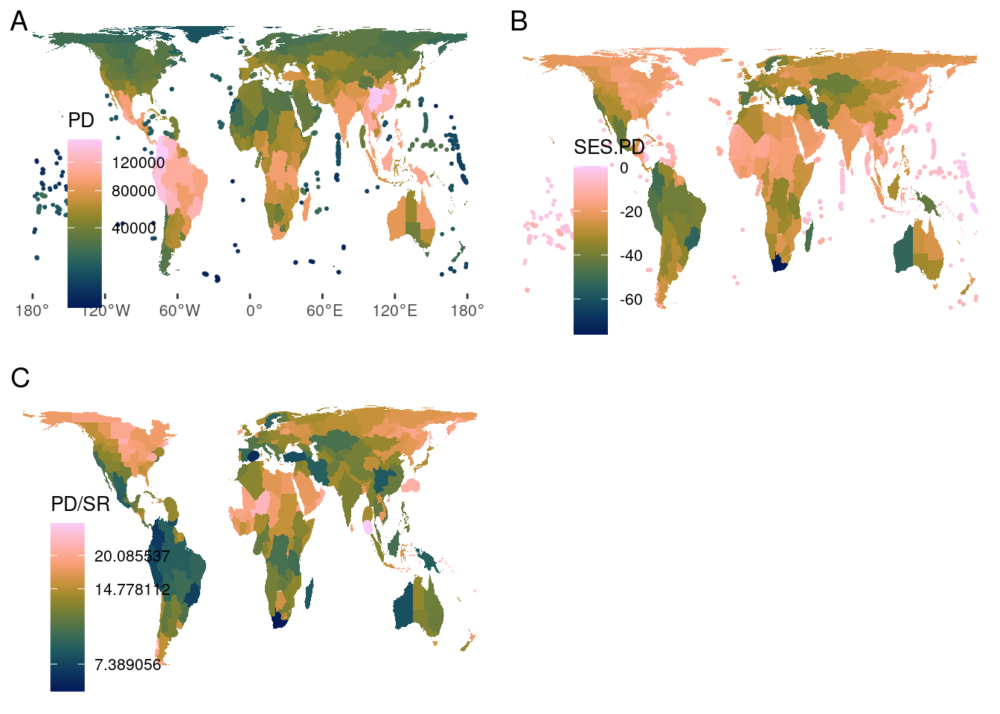
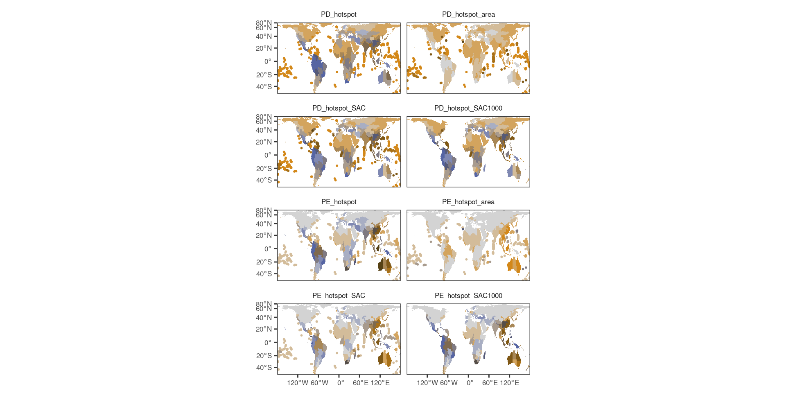
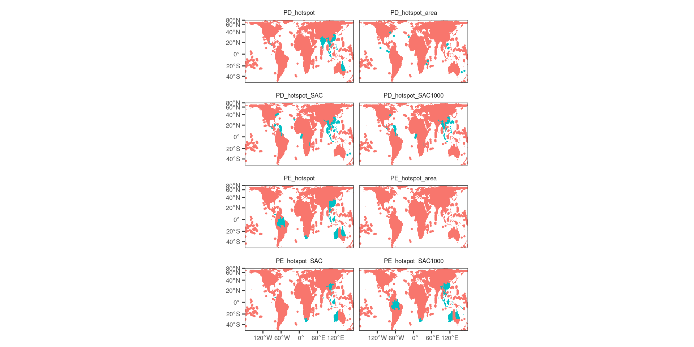

area_standardization
Richness-area-relationship
Different species richness standardisations
Load data
used (Mb) gc trigger (Mb) max used (Mb)
Ncells 577368 30.9 1281851 68.5 746891 39.9
Vcells 1067609 8.2 8388608 64.0 1800309 13.8Linking to GEOS 3.10.2, GDAL 3.4.1, PROJ 8.2.1; sf_use_s2() is TRUELoading required package: spLoading required package: spDataTo access larger datasets in this package, install the spDataLarge
package with: `install.packages('spDataLarge',
repos='https://nowosad.github.io/drat/', type='source')`Registered S3 method overwritten by 'ape':
method from
plot.mst spdepArea standardization
Standardize by inhabitable area
Divide species richness by area of botanical country - icesheets.
Species-area-curve
Fit species-area-curve, then divide species richness by theoretical species richness of botanical country.
Species-area-curve, >1000 species
Fit species-area-curve, but for countries with > 1000 species only. Then divide species richness by theoretical species richness of botanical country.
Divide PD by SR
Alternative to SES.PD: simply divide PD by SR.
Plot maps
Species richness maps
plot_grid(sr_map, SR_area_map, SR_SAC_map, SR_SAC1000_map, ncol = 2,
labels=c("A","B","C","D"), label_fontface=1)
Phylodiversity maps
plot_grid(pd_map, pd_ses_map, PD_SR_map, ncol = 2,
labels=c("A","B","C"), label_fontface=1)
Hotspots
table(bi_class(shp2, x = SR_area, y = SES.PD, style="jenks", dim = 4)$bi_class) # 7 hotspots
1-1 1-2 1-3 1-4 2-4 3-4 4-4
18 93 148 72 17 6 1 table(bi_class(shp2, x = SR_SAC, y = SES.PD, style = "jenks", dim = 4)$bi_class) # 19 hotspots
1-2 1-3 1-4 2-1 2-2 2-3 2-4 3-1 3-2 3-3 3-4 4-1 4-2 4-3 4-4
33 75 48 6 39 48 30 6 16 24 17 6 5 1 1 table(bi_class(shp2, x = SR_SAC1000, y = SES.PD, style = "jenks", dim = 4)$bi_class) # 15 hotspotsWarning in classInt::classIntervals(.data[[var]], n = dim, style = style): var
has missing values, omitted in finding classes
1-1 1-2 1-3 1-4 2-1 2-2 2-3 2-4 3-1 3-2 3-3 3-4 4-1 4-2 4-3 NA-2
1 33 77 5 3 38 40 11 8 15 18 11 6 6 4 1
NA-3 NA-4
9 69 table(bi_class(shp2[shp2$richness>1000,], x = richness, y = SES.PD, style = "jenks", dim = 4)$bi_class) # 8 hotspots
1-1 1-2 1-3 1-4 2-1 2-2 2-3 2-4 3-1 3-2 3-3 3-4 4-1 4-2
1 43 95 38 4 32 21 9 8 10 7 1 5 2 # Top 2.5% (= 9 or 7 bot countries) instead:
(nrow(shp2)/100)*2.5[1] 8.875shp2$LEVEL_NAME[order(shp2$SR_area, decreasing=T)][1:9][1] "Selvagens" "South China Sea"
[3] "District of Columbia" "C. American Pacific Is."
[5] "Mozambique Channel Is." "Bermuda"
[7] "Norfolk Is." "Ogasawara-shoto"
[9] "Kazan-retto" shp2$LEVEL_NAME[order(shp2$SR_SAC, decreasing=T)][1:9][1] "Ecuador" "Colombia" "Costa Rica"
[4] "District of Columbia" "Peru" "Panama"
[7] "China South-Central" "Brazil Southeast" "Mexico Southwest" shp2$LEVEL_NAME[order(shp2$SR_SAC1000, decreasing=T)][1:9][1] "Ecuador" "Colombia" "Costa Rica"
[4] "Peru" "Panama" "China South-Central"
[7] "Mexico Southwest" "Brazil Southeast" "Cape Provinces" shp2$LEVEL_NAME[order(shp2$PD_obs, decreasing=T)][1:9][1] "Colombia" "China South-Central" "Peru"
[4] "Venezuela" "Ecuador" "Bolivia"
[7] "Brazil Southeast" "Vietnam" "China Southeast" shp2$LEVEL_NAME[order(shp2$SES.PD, decreasing=T)][1:9][1] "Tuvalu" "Chagos Archipelago" "Marshall Is."
[4] "Tokelau-Manihiki" "Christmas I." "Nauru"
[7] "Pitcairn Is." "Mozambique Channel Is." "Southwest Caribbean" shp2$LEVEL_NAME[order(shp2$PD_SR, decreasing=T)][1:9][1] "Tuvalu" "Chagos Archipelago" "Line Is."
[4] "Tokelau-Manihiki" "Nauru" "Mozambique Channel Is."
[7] "Cocos (Keeling) I." "Pitcairn Is." "Gilbert Is." shp2$LEVEL_NAME[order(shp2$SES.PE, decreasing=T)][1:9][1] "Western Australia" "Queensland" "New South Wales"
[4] "Laos" "Borneo" "China Southeast"
[7] "Victoria" "Thailand" "New Caledonia" dim <- 4
# regular
shp2$PE_hotspot <- bi_class(shp2, x = WE, y = SES.PE, style = "jenks", dim = dim)$bi_class
shp2$PD_hotspot <- bi_class(shp2, x = richness, y = SES.PD, style = "jenks", dim = dim)$bi_class
# area
shp2$PE_hotspot_area <- bi_class(shp2, x = WE_area, y = SES.PE, style = "jenks", dim = dim)$bi_class
shp2$PD_hotspot_area <- bi_class(shp2, x = SR_area, y = SES.PD, style = "jenks", dim = dim)$bi_class
# SAC
shp2$PE_hotspot_SAC <- bi_class(shp2, x = WE_SAC, y = SES.PE, style = "jenks", dim = dim)$bi_class
shp2$PD_hotspot_SAC <- bi_class(shp2, x = SR_SAC, y = SES.PD, style = "jenks", dim = dim)$bi_class
# SAC >1000
shp2$PE_hotspot_SAC1000 <- bi_class(shp2, x = WE_SAC1000, y = SES.PE, style = "jenks", dim = dim)$bi_classWarning in classInt::classIntervals(.data[[var]], n = dim, style = style): var
has missing values, omitted in finding classesshp2$PD_hotspot_SAC1000 <- bi_class(shp2, x = SR_SAC1000, y = SES.PD, style = "jenks", dim = dim)$bi_classWarning in classInt::classIntervals(.data[[var]], n = dim, style = style): var
has missing values, omitted in finding classesthicc_lines <- shp2[which(shp2$area<min.area),]Getting the top 2.5% (or 5%) of each variable produces no overlap between a species richness measure and a phylodiversity measure.
hs
#table(shp2$PD_hotspot)
hsyes <- c("3-3", "3-4", "4-3", "4-4") # this is more inclusive than currently in the manuscript (PE 3-3)
ggplot() +
geom_sf(df.mlt, mapping = aes(fill=value%in%hsyes), color = NA, size = 0.1, show.legend = FALSE) +
# bi_scale_fill(pal=my_pal, dim=dim, na.value="white") +
geom_sf(data=thicc.mlt, lwd=1, aes(col=value%in%hsyes), show.legend=F)+
# bi_scale_color(pal=my_pal, dim=dim, na.value="white")+
coord_sf(expand=F)+
facet_wrap(~group, ncol=2)+
theme(strip.background=element_blank())
Clustering = “jenks”, 4 groups. Hotspots are in blue.
strictly dividing by area: only island hotspots. This patterns is stable for up to 5000 species (there are enough islands)
dividing by SAR-curve SR yields more balanced results, with small differences (islands)